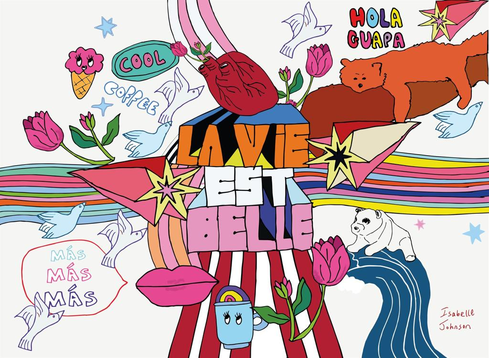

Illustration
Illustration, Social Content.
Work done for clients including charity LEYF. I can also use AI to bring hand-drawn illustrations into motion.



Work done for clients including charity LEYF. I can also use AI to bring hand-drawn illustrations into motion.
